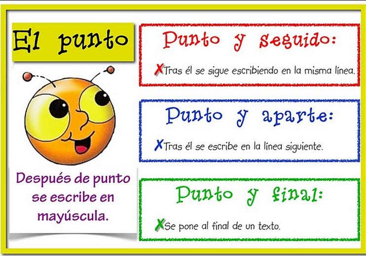
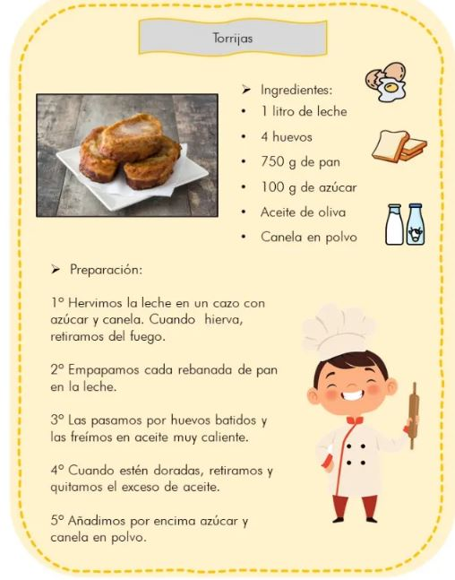
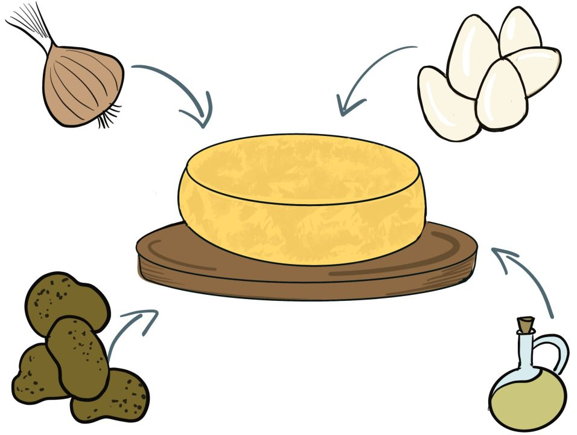

Información

Para escribir bien una receta hay que saber utilizar los distintos tipos de punto.
¡EMPECEMOS CON EL PUNTO!
Lectura facilitada
Para escribir bien una receta hay que saber utilizar los distintos tipos de puntos.
¡EMPECEMOS CON EL PUNTO!
Para escribir bien una receta hay que saber utilizar los distintos tipos de punto.
¡EMPECEMOS CON EL PUNTO!
Para escribir bien una receta hay que saber utilizar los distintos tipos de puntos.
¡EMPECEMOS CON EL PUNTO!
Después de punto y aparte, y punto y seguido, la palabra que sigue se escribirá, siempre, con la primera letra en mayúscula.
El punto es un signo de puntuación (.).
Hay 3 tipos de punto:

Cuando leemos y aparece un punto, tenemos que hacer una pausa.
El punto es un signo de puntuación (.)
Hay tres tipos de punto:
3. El punto y final.
Se pone al final de un texto.
Cuando leemos y aparece un punto, tenemos que hacer una pausa.
Ahora que ya conoces los distintos tipos de punto, vamos a practicar.
Elige la opción con la que te sientas más cómodo-a.
¡A por todas!
A ver si has entendido los tipos de puntos que hay. Para ello vas a hacer esta actividad.
no sabe los tipos de puntos que hay. ¿Puedes ayudarle?
En esta receta rodea de color azul los punto y seguido, de color rojo los punto y aparte y de color naranja el punto y final.
Puedes utilizar esta plantilla. https://drive.google.com/file/d/1V_VvuoyCO5-smMkQMNBU57uMpoFe04AO/view?usp=sharing

ha escrito una receta pero ha olvidado poner los puntos. ¿Puedes ayudarle a ponerlos?
Utiliza esta plantilla.

Obra publicada con Licencia Creative Commons Reconocimiento No comercial Compartir igual 4.0